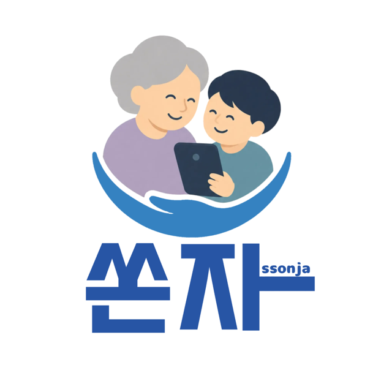

💬
요즘말 번역기
낯선 신조어를 입력하거나 말하면 쉬운 말과 예시로 풀어줍니다.
SENIOR DIGITAL COMPANION
낯선 스마트폰 화면과 어려운 디지털 서비스를, 손자·손녀처럼 다정하게 함께 해결하는 웹앱입니다.

WHY SONJA?
“모르는 말은 묻기 어렵고, 복잡한 화면은 실수할까 걱정돼요.”
쏜자는 일상에서 마주치는 디지털 장벽을 낮춰, 어르신이 더 안심하고 스스로 사용할 수 있도록 돕습니다.
CORE SERVICES
낯선 신조어를 입력하거나 말하면 쉬운 말과 예시로 풀어줍니다.
키오스크, ATM, 카카오톡, 배달 주문 등을 단계별로 안내합니다.
수상한 문자 속 위험 단어를 살펴보고, 주의 행동을 알려줍니다.
FEATURE 01 · COMMUNICATION
글자를 입력하기 어려운 순간에는 음성 인식으로 편하게 질문할 수 있습니다.
답변을 음성으로 다시 들으며, 어려운 단어는 친숙한 예시와 함께 이해할 수 있습니다.
FEATURE 02 · DAILY LIFE
검색어를 고르면 핵심 순서와 주의할 점을 보여주고, 사진을 올리거나 카메라로 찍어 도움을 요청할 수 있도록 구성했습니다.
식당 주문, 주민등록등본 발급, 은행 ATM, 식당 예약, 카카오톡, 배달 주문을 지원합니다.
ACCESSIBILITY BY DESIGN
큰 버튼, 쉬운 문장, 다정한 말투를 기본으로 삼아 ‘도움을 요청하기 쉬운 화면’을 지향합니다.
SAFETY FIRST
위험이 감지되면 가족과 상의하거나 112에 연락하도록 안내해, 더 안전한 디지털 생활을 돕습니다.
THE GOAL OF SONJA
쏜자는 어르신의 독립적인 디지털 생활과 가족 간 소통을 응원합니다.